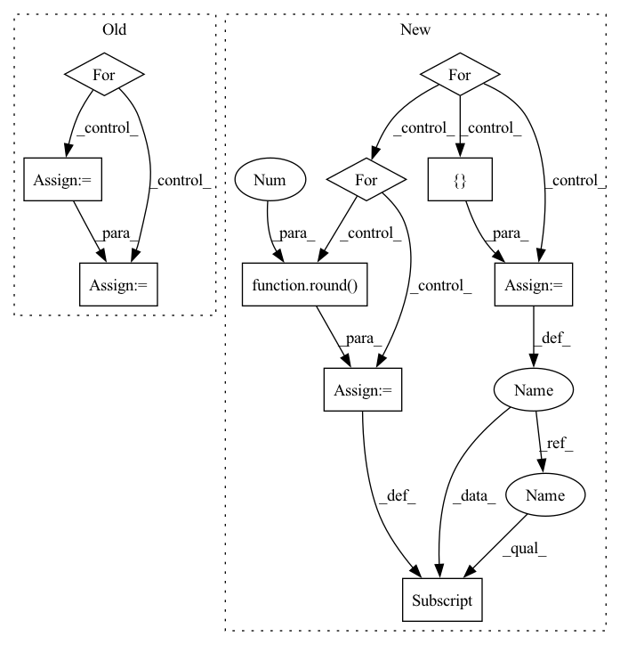

Pattern ID :6541
Before Change
A value for those columns not applicable to standalone server
for gpu_id, metrics in data.items():
data_row = ["triton-server", gpu_id, default_value, default_value]
data_row += [metric.value() for metric in metrics]
self._result_tables[
self.server_only_table_key].insert_row_by_index(data_row)
After Change
server_fields = self._server_output_fields
for gpu_id, metrics in data.items():
data_row = [ Nonefor metric in metrics:
metric_tag_index = self._find_index_for_field(
server_fields, metric.tag)
if metric_tag_index is not None:
data_row[metric_tag_index] = round( metric.value(), 1 )
self._result_tables[
self.server_only_table_key].insert_row_by_index(data_row)
def add_measurement(self, run_config, measurement):In pattern: SUPERPATTERN
Frequency: 3
Non-data size: 10
Instances Fragment ID: 22604537
Project Name: triton-inference-server/model_analyzer
Commit Name: 4b248bf400efd58166c05081e0e2256ca005bb8b
Time: 2021-03-23
Author: itabrizian@nvidia.com
File Name: model_analyzer/result/result_manager.py
M Class Name: ResultManager
N Class Name: ResultManager
M Method Name: add_server_data(2)
N Method Name: add_server_data(3)
M Parent Class:
N Parent Class:
M File Name: model_analyzer/result/result_manager.py
N File Name: model_analyzer/result/result_manager.py
M Start Line: 123
M End Line: 141
N Start Line: 190
N End Line: 213
Before Change
// with tqdm(dataset, desc="Test{}".format(str(epoch)), total=len(dataset), leave=True) as test_epoch:
with torch.no_grad():
for idx, (X_test, Y_test, dia, sys, mean) in enumerate(test_epoch):
hypothesis = model(X_test, scaler=scaler)
"""Negative Pearson Loss"""
rmse_cost = loss[0](hypothesis, Y_test)
// neg_cost = 0
"""STFT Loss"""
stft_cost = loss[1](hypothesis, Y_test)
"""DBP Loss"""
// d_cost = loss[0](pred_d, dia)
"""SBP Loss"""
// s_cost = loss[0](pred_s, sys)
"""Total Loss"""
cost = rmse_cost + stft_cost // + d_cost + s_cost
test_cost_sum += cost.__float__()
test_avg_cost = test_cost_sum / (idx + 1)
test_epoch.set_postfix(rmse=rmse_cost.__float__(), stft=stft_cost.__float__(), tot=test_avg_cost)
if plot_flag:After Change
with tqdm(dataset, desc="Test{}".format(str(epoch)), total=len(dataset), leave=True) as test_epoch:
with torch.no_grad():
for idx, (X_test, Y_test, dia, sys, size_class) in enumerate(test_epoch):
hypothesis = model(X_test, scaler=scaler)
avg_cost_list, cost = tu.calc_losses(avg_cost_list, loss,
hypothesis, Y_test,
idx + 1)
total_cost = np.sum(avg_cost_list)
temp = {}
for i in range(len(loss)):
temp[(str(loss[i]))[:-2]] = (round( avg_cost_list[i], 3 ))
test_epoch.set_postfix(losses=temp, tot=total_cost)
if plot_flag:
plot = plot_prediction(X_test[0], Y_test[0], [dia[0], sys[0], size_class[0]], hypothesis[0], epoch, Fragment ID: 22604506
Project Name: tvs-ai/pytorch_rppgs
Commit Name: 79fa5ea2fc22ff76197fc5272382574b54608880
Time: 2023-01-02
Author: forownsake@gmail.com
File Name: vid2bp/test.py
M Class Name: AnonimousClass
N Class Name: AnonimousClass
M Method Name: test(6)
N Method Name: test(5)
M Parent Class:
N Parent Class:
M File Name: vid2bp/test.py
N File Name: vid2bp/test.py
M Start Line: 53
M End Line: 84
N Start Line: 61
N End Line: 91
Before Change
// with tqdm(dataset, desc="Test{}".format(str(epoch)), total=len(dataset), leave=True) as test_epoch:
with torch.no_grad():
for idx, (X_val, Y_val, dia, sys, mean) in enumerate(valid_epoch):
hypothesis = model(X_val, scaler=scaler)
"""Negative Pearson Loss"""
rmse_cost = loss[0](hypothesis, Y_val)
// neg_cost = 0
"""STFT Loss"""
stft_cost = loss[1](hypothesis, Y_val)
"""DBP Loss"""
// d_cost = loss[0](pred_d, dia)
"""SBP Loss"""
// s_cost = loss[0](pred_s, sys)
"""Total Loss"""
cost = rmse_cost + stft_cost// + d_cost + s_cost
valid_cost_sum += cost.__float__()
valid_avg_cost = valid_cost_sum / (idx + 1)
valid_epoch.set_postfix(rmse=rmse_cost.__float__(), stft=stft_cost.__float__(), tot=valid_avg_cost)After Change
with tqdm(dataset, desc="Validation{}".format(str(epoch)), total=len(dataset), leave=True) as valid_epoch:
with torch.no_grad():
for idx, (X_val, Y_val, dia, sys, size_class) in enumerate(valid_epoch):
hypothesis = model(X_val, scaler=scaler)
avg_cost_list, cost = tu.calc_losses(avg_cost_list, loss,
hypothesis, Y_val,
idx + 1)
total_cost = np.sum(avg_cost_list)
temp = {}
for i in range(len(loss)):
temp[(str(loss[i]))[:-2]] = (round( avg_cost_list[i], 3 ))
valid_epoch.set_postfix(losses=temp, tot=total_cost)
// wandb.init(project="VBPNet", entity="paperchae")
// wandb.log({"Valid Loss": total_cost}, step=epoch) Fragment ID: 22604574
Project Name: tvs-ai/pytorch_rppgs
Commit Name: 79fa5ea2fc22ff76197fc5272382574b54608880
Time: 2023-01-02
Author: forownsake@gmail.com
File Name: vid2bp/validation.py
M Class Name: AnonimousClass
N Class Name: AnonimousClass
M Method Name: validation(5)
N Method Name: validation(5)
M Parent Class:
N Parent Class:
M File Name: vid2bp/validation.py
N File Name: vid2bp/validation.py
M Start Line: 29
M End Line: 58
N Start Line: 31
N End Line: 53